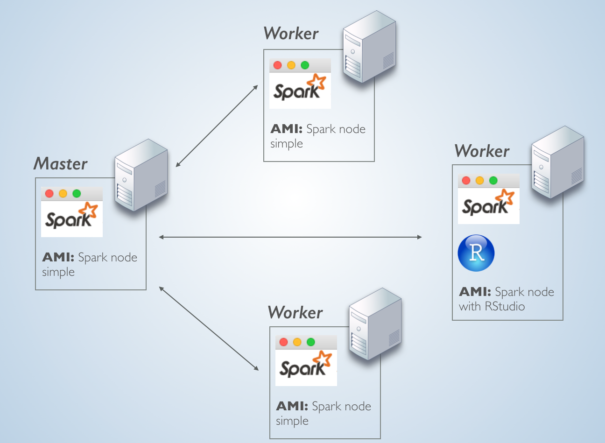

Spark Standalone Installation Guide
Overview
The plan is to launch 4 identical EC2 server instances. One server will be the Master node and the other 3 the worker nodes. In one of the worker nodes, we will install RStudio server.
What makes a server the Master node is only the fact that it is running the master service, while the other machines are running the slave service and are pointed to that first master. This simple setup, allows us to install the same Spark components on all 4 servers and then just add RStudio to one of them.
The topology will look something like this:

AWS EC Instances
Here are the details of the EC2 instance, just deploy one at this point:
- Type: t2.medium
- OS: Ubuntu 14 (Trusty)
- Disk space: At least 20GB
- Security group: Consider opening the following ports: 8080 (Spark UI), 4040 (Spark Worker UI), 8088 (sparklyr UI), 8787 (RStudio)
Spark
Perform the steps in this section on all of the servers that will be part of the cluster.
Install Java 8
We will add the Java 8 repository, install it and set it as default
sudo apt-add-repository ppa:webupd8team/java sudo apt-get update sudo apt-get install oracle-java8-installer sudo apt-get install oracle-java8-set-default sudo apt-get update
Download Spark
Download and unpack a pre-compiled version of Spark. Here’s is the link to the official Spark download page
wget http://d3kbcqa49mib13.cloudfront.net/spark-2.0.1-bin-hadoop2.7.tgz tar -xvzf spark-2.0.1-bin-hadoop2.7.tgz cd spark-2.0.1-bin-hadoop2.7
Create and launch AMI
We will create an image of the server. In Amazon, these are called AMIs, for information please see the User Guide.
Launch 3 instances of the AMI
Start the Master node
Select one of the 4 servers to become your Master node
Run the command that starts the master service
sudo spark-2.0.0-bin-hadoop2.7/sbin/start-master.shClose the terminal connection (optional)
Start Worker nodes
Start the slave service. Important: Use dots not dashes as separators for the Spark Master node’s address
sudo spark-2.0.0-bin-hadoop2.7/sbin/start-slave.sh spark://[Master node's IP address]:7077Close the terminal connection (optional)
RStudio Server
Select one of the worker nodes to execute this section. Please check the RStudio download page for the latest version
Install R
In order to get the latest R core, we will need to update the source list in Ubuntu.
sudo sh -c 'echo "deb http://cran.rstudio.com/bin/linux/ubuntu trusty/" >> /etc/apt/sources.list' gpg --keyserver keyserver.ubuntu.com --recv-key E084DAB9 gpg -a --export E084DAB9 | sudo apt-key add - sudo apt-get updateNow we can install R
sudo apt-get install r-base sudo apt-get install gdebi-core
Install RStudio
We will download and install 1.044 of RStudio Server. To find the latest version, please visit the RStudio website. In order to get the enhanced integration with Spark, RStudio version 1.044 or later will be needed.
wget https://download2.rstudio.org/rstudio-server-1.0.44-amd64.deb sudo gdebi rstudio-server-1.0.44-amd64.deb
Install dependencies
Run the following commands
sudo apt-get -y install libcurl4-gnutls-dev sudo apt-get -y install libssl-dev sudo apt-get -y install libxml2-dev
Add default user
Run the following command to add a default user
sudo adduser rstudio-user
Pre-load pacakges
Log into RStudio (port 8787)
Use ‘rstudio-user’
install.packages("sparklyr") install.packages("tidyverse")Install Spark files
spark_install("2.0.1")
Connect to the Spark Master
Navigate to the Spark Master’s UI, typically on port 8080

Note the Spark Master URL
Logon to RStudio
Run the following code
library(sparklyr)
library(dplyr)
spark_connect(master="[Spark Master URL]",
version = "2.0.1",
spark_home = spark_home_dir())